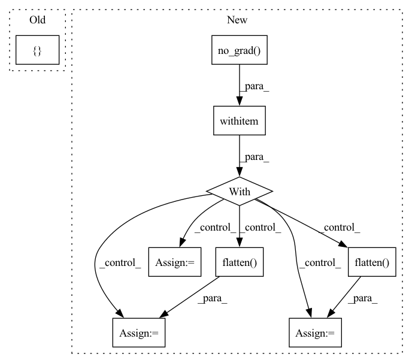

Pattern ID :23882
Before Change
if self.sample_distance is not None and self.sample_distance < tsz:
neg_idxs += torch.cat(
[ torch.arange(start=1, end=tsz - self.sample_distance, device=neg_idxs.device, dtype=neg_idxs.dtype),
torch.arange(start=tsz - self.sample_distance, end=tsz - self.sample_distance * 2 - 1, step=-1,
device=neg_idxs.device, dtype=neg_idxs.dtype)After Change
neg_idxs = torch.randint(low=0, high=high, size=(bsz, self.n_negatives * tsz))
with torch .no_grad():
if self.n_negatives > 0:
tszs = (
buffered_arange(tsz)
.unsqueeze(-1)
.expand(-1, self.n_negatives)
.flatten()
)
neg_idxs = torch.randint(
low=0, high=high - 1, size=(bsz, self.n_negatives * tsz)
)
neg_idxs[neg_idxs >= tszs] += 1
if self.cross_sample_negatives > 0:
tszs = (
buffered_arange(tsz)
.unsqueeze(-1)
.expand(-1, self.cross_sample_negatives)
.flatten()
)
cross_neg_idxs = torch.randint(
low=0,
high=cross_high - 1,In pattern: SUPERPATTERN
Frequency: 4
Non-data size: 9
Instances Fragment ID: 74405356
Project Name: kssteven418/i-bert
Commit Name: 3335de5f441ee1b3824e16dcd98db620e40beaba
Time: 2020-02-29
Author: alexei.b@gmail.com
File Name: fairseq/models/wav2vec.py
M Class Name: Wav2VecPredictionsModel
N Class Name: Wav2VecPredictionsModel
M Method Name: sample_negatives(2)
N Method Name: sample_negatives(2)
M Parent Class: nn.Module
N Parent Class: nn.Module
M File Name: fairseq/models/wav2vec.py
N File Name: fairseq/models/wav2vec.py
M Start Line: 385
M End Line: 404
N Start Line: 583
N End Line: 629
Before Change
}
self.logger.log_losses(info, generator_iter)
info = {
"real_images": self.reshape_images(images),
"generated_images": self.reshape_images(self.G(z))
}
self.logger.log_images(info, generator_iter)
self.save_model(epoch, generator_iter)
After Change
}
self.logger.log_losses(info, generator_iter)
with torch .no_grad():
fake_images = self.G(z)[:self.number_of_images]
real_images = images[:self.number_of_images]
// discriminate real images and fake images
fake_labels = self.D(fake_images).flatten()
real_labels = self.D(images).flatten()
info = {
"real_images": real_images.cpu().detach().numpy(),
Fragment ID: 74405391
Project Name: luzhixing12345/anime-wgan
Commit Name: 78bfc686a9a57dc4f0267d8616bea1757e91921a
Time: 2022-05-08
Author: luzhixing12345@163.com
File Name: model/DCGAN.py
M Class Name: DCGAN
N Class Name: DCGAN
M Method Name: train(2)
N Method Name: train(2)
M Parent Class: BasicModel
N Parent Class: BasicModel
M File Name: model/DCGAN.py
N File Name: model/DCGAN.py
M Start Line: 114
M End Line: 193
N Start Line: 116
N End Line: 193
Before Change
}
self.logger.log_losses(info, generator_iter)
info = {
"real_images": self.reshape_images(images),
"generated_images": self.reshape_images(self.G(z))
}
self.logger.log_images(info, generator_iter)
self.save_model(epoch, generator_iter)
After Change
}
self.logger.log_losses(info, generator_iter)
with torch .no_grad():
fake_images = self.G(z)[:self.number_of_images]
real_images = images[:self.number_of_images]
// discriminate real images and fake images
fake_labels = self.D(fake_images).flatten()
real_labels = self.D(images).flatten()
info = {
"real_images": real_images.cpu().detach().numpy(),
Fragment ID: 74405409
Project Name: luzhixing12345/anime-wgan
Commit Name: 0a8816f8a7e456f3393ccf2f0468adecf03b24b3
Time: 2022-05-09
Author: luzhixing12345@163.com
File Name: model/GAN.py
M Class Name: GAN
N Class Name: GAN
M Method Name: train(2)
N Method Name: train(2)
M Parent Class: BasicGAN
N Parent Class: BasicGAN
M File Name: model/GAN.py
N File Name: model/GAN.py
M Start Line: 42
M End Line: 128
N Start Line: 113
N End Line: 199